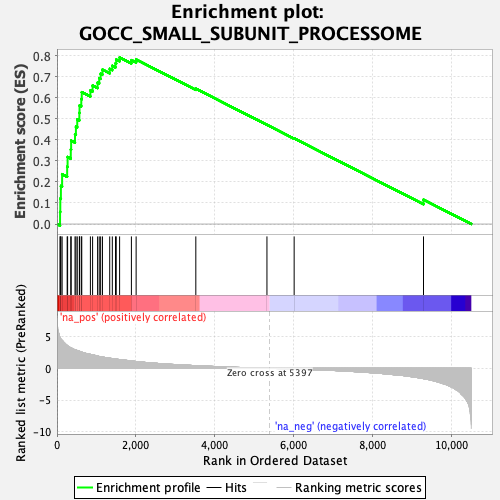
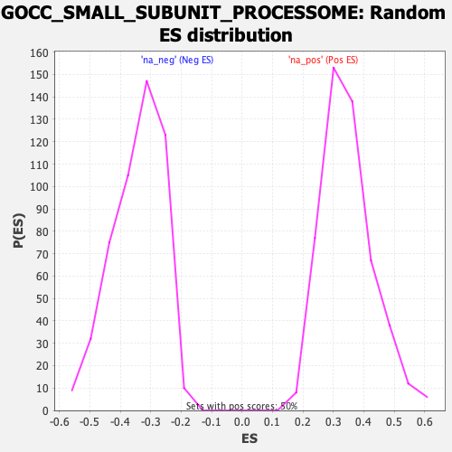

| Dataset | qlf.KOd4vsWTd4_gsea_score |
| Phenotype | NoPhenotypeAvailable |
| Upregulated in class | na_pos |
| GeneSet | GOCC_SMALL_SUBUNIT_PROCESSOME |
| Enrichment Score (ES) | 0.7922838 |
| Normalized Enrichment Score (NES) | 2.2891843 |
| Nominal p-value | 0.0 |
| FDR q-value | 0.0 |
| FWER p-Value | 0.0 |

| SYMBOL | RANK IN GENE LIST | RANK METRIC SCORE | RUNNING ES | CORE ENRICHMENT | |
|---|---|---|---|---|---|
| 1 | NOP56 | 78 | 4.856 | 0.0574 | Yes |
| 2 | NOP58 | 84 | 4.801 | 0.1210 | Yes |
| 3 | FBL | 99 | 4.608 | 0.1812 | Yes |
| 4 | RRP9 | 130 | 4.393 | 0.2370 | Yes |
| 5 | IMP4 | 258 | 3.576 | 0.2726 | Yes |
| 6 | MPHOSPH10 | 269 | 3.536 | 0.3189 | Yes |
| 7 | WDR36 | 350 | 3.238 | 0.3545 | Yes |
| 8 | NOC4L | 359 | 3.213 | 0.3966 | Yes |
| 9 | TBL3 | 457 | 2.929 | 0.4265 | Yes |
| 10 | PWP2 | 480 | 2.887 | 0.4629 | Yes |
| 11 | WDR46 | 514 | 2.812 | 0.4973 | Yes |
| 12 | UTP18 | 567 | 2.696 | 0.5284 | Yes |
| 13 | UTP20 | 572 | 2.682 | 0.5638 | Yes |
| 14 | DCAF13 | 616 | 2.575 | 0.5941 | Yes |
| 15 | NOL10 | 628 | 2.546 | 0.6270 | Yes |
| 16 | KRR1 | 847 | 2.198 | 0.6355 | Yes |
| 17 | FCF1 | 903 | 2.119 | 0.6586 | Yes |
| 18 | XRCC5 | 1030 | 1.942 | 0.6725 | Yes |
| 19 | HEATR1 | 1071 | 1.869 | 0.6936 | Yes |
| 20 | UTP14A | 1107 | 1.824 | 0.7146 | Yes |
| 21 | RPS7 | 1153 | 1.780 | 0.7341 | Yes |
| 22 | UTP6 | 1337 | 1.591 | 0.7379 | Yes |
| 23 | WDR3 | 1403 | 1.538 | 0.7522 | Yes |
| 24 | NOL6 | 1484 | 1.467 | 0.7642 | Yes |
| 25 | PDCD11 | 1502 | 1.454 | 0.7820 | Yes |
| 26 | NOP14 | 1588 | 1.381 | 0.7923 | Yes |
| 27 | IMP3 | 1887 | 1.160 | 0.7793 | No |
| 28 | UTP3 | 2007 | 1.074 | 0.7823 | No |
| 29 | EMG1 | 3521 | 0.422 | 0.6435 | No |
| 30 | NGDN | 5325 | 0.015 | 0.4716 | No |
| 31 | UTP23 | 6015 | -0.099 | 0.4072 | No |
| 32 | PRKDC | 9296 | -1.614 | 0.1157 | No |
